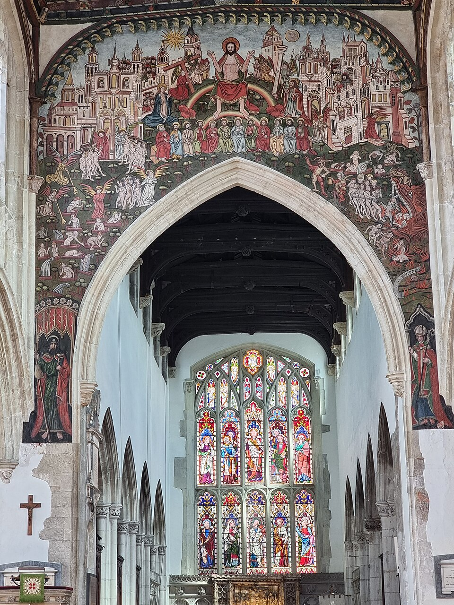
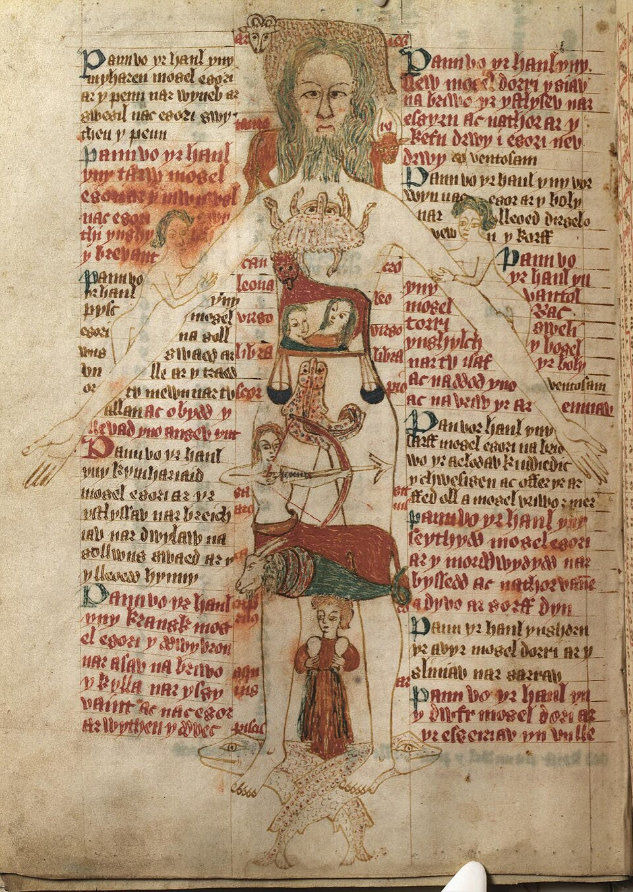
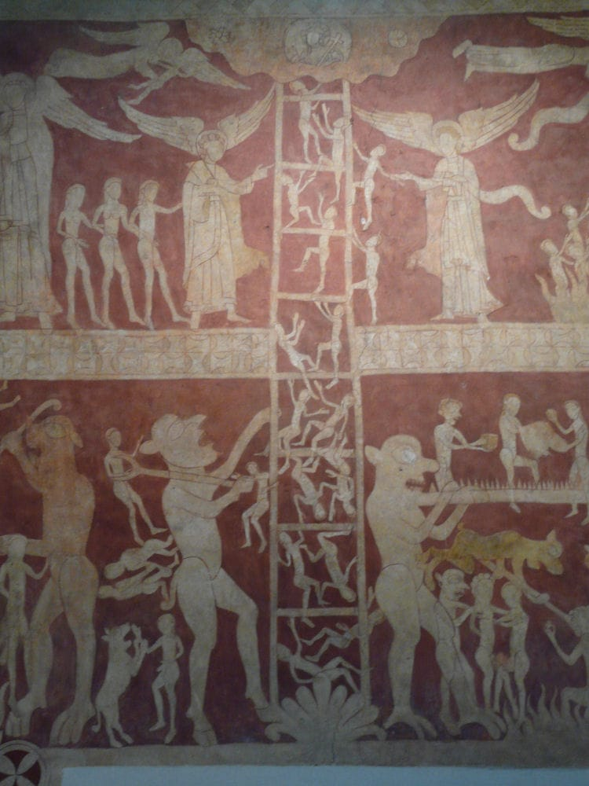
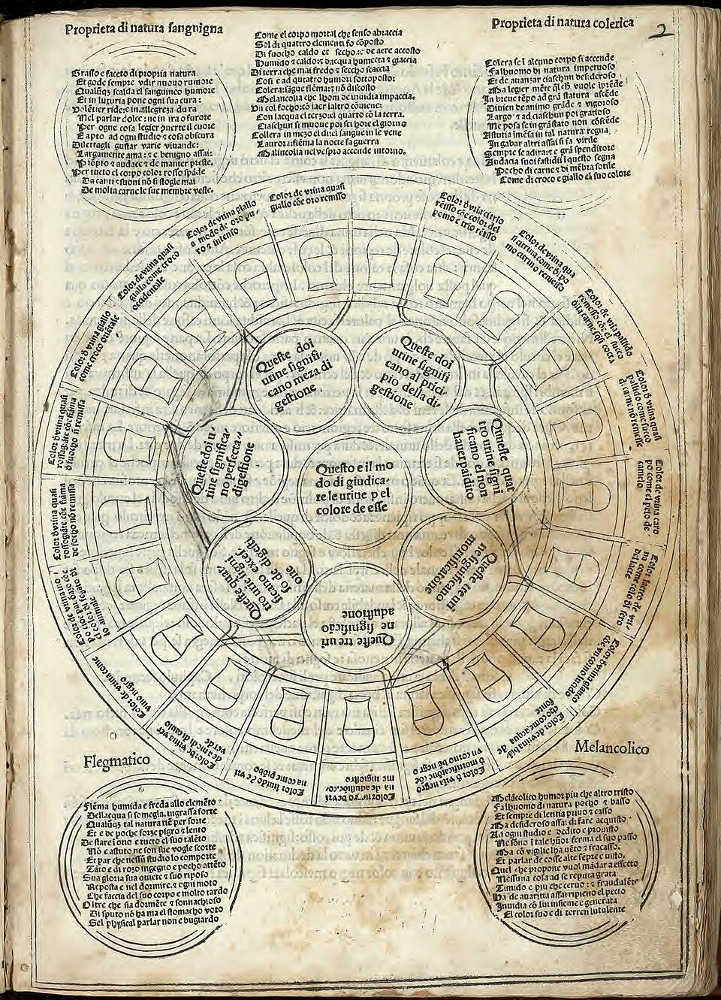
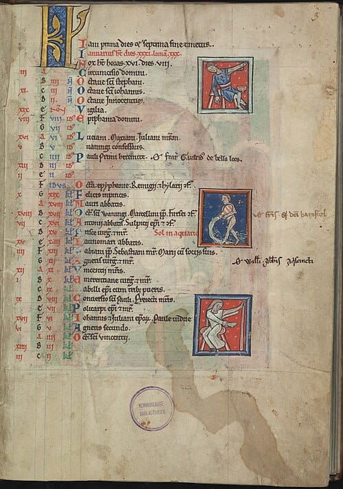
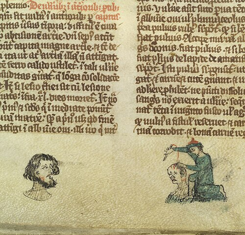
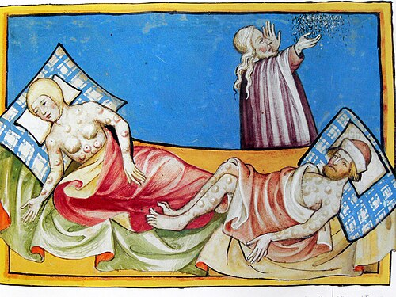
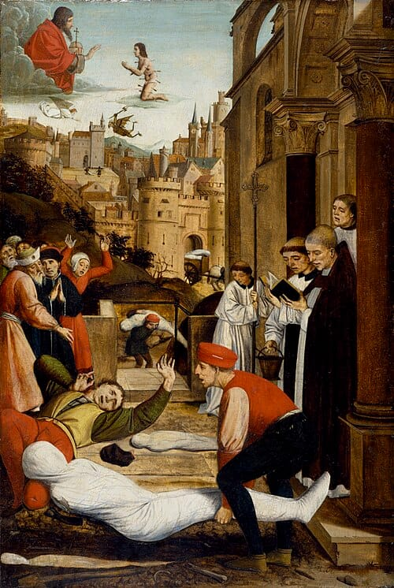

Medieval
Paper 1: Medicine Through Time with the Western Front
Course Textbook
Enquiry: How has medicine changed from c1250 to the modern day?
Contents
|
Lesson 1: KT1.1: Supernatural & Religious Explanations of Disease (c1250–c1500)
|
|
|
Lesson 2: KT1.2: Rational Explanations: Hippocrates, Galen & The Four Humours (c1250–c1500)
|
|
|
Lesson 3: KT1.3: Approaches to Prevention & Treatment: Rituals, Bleeding & Purging (c1250–c1500)
|
|
|
Lesson 4: KT1.4: Medical Care Providers & Monastic Hospitals: ‘Care Not Cure’ (c1250–c1500)
|
|
|
Lesson 5: KT1.5: Case Study: Dealing with the Black Death (1348–1349)
|
|
L1: KT1.1: Supernatural & Religious Explanations of Disease (c1250–c1500)[[SRC_MARKER:L0_Start]]
Learning Objectives
Explain how church control of scriptoria, education, and universities enforced Galenic orthodoxy.
Analyse why illness was interpreted as divine retribution and evaluate the treatment of biblical lepers.
Assess how Christian theology reconciled planetary astrology with medical diagnosis and phlebotomy.
Explain why sick medieval people turned to pilgrimage shrines and saints’ relics rather than doctors.
Evaluate why the Church’s adoption of Galen’s teleological design halted anatomical inquiry for centuries.
Vocabulary Check
The Odd One Out: Circle ONE term that does not belong with the others. Explain your reasoning: What historical connection links the other terms, and why is your chosen term different?
| | | |
Teacher Model / Pupil Reasoning:
[[SRC_MARKER:L0_Source_0]]
Source S1: The Doom Painting of St Thomas’s Church, Salisbury (c.1475)

The monumental 15th-century Doom painting above the chancel arch depicting Christ in Majesty, the righteous ascending to Heaven (left), and the damned being dragged into the Hellmouth (right).
[[SRC_MARKER:L0_Source_1]]
Source S2: The 'Zodiac Man' (Homo Signorum, c.1380)

The Zodiac Man (Homo Signorum) showing the 12 astrological signs that medieval physicians believed governed different bodily organs.
[1.1] In medieval England (c1250–c1500), the Roman Catholic Church exercised an unshakeable institutional monopoly over intellectual life, education, and societal values. Formal scholarship was an ecclesiastical privilege; cathedral grammar schools and universities like Oxford, Cambridge, and Paris were staffed exclusively by tonsured Catholic clergy. Most decisively, all book production and manuscript dissemination were concentrated within monastic scriptoria. In these monastic copying rooms, Benedictine and Cistercian monks laboriously hand-transcribed Latin scrolls onto vellum parchment over months of physical toil. Because the Church controlled the physical means of textual reproduction, clerical superiors operated as unyielding censors, deciding precisely which ancient treatises were copied, translated, or permanently suppressed from university libraries.
[1.2] Medical instruction across medieval European faculties was strictly theoretical, scholastic, and subordinated to biblical scripture. The Church taught that the material universe was a temporary, imperfect terrestrial realm entirely subservient to divine providence. Consequently, comprehending human health did not require physical dissection, clinical experimentation, or empirical inquiry; it demanded the memorisation of holy scripture alongside ancient philosophical authorities sanctified by papal decree. Within medieval theological orthodoxy, sickness was treated as a spiritual condition reflecting divine purpose. To openly dispute canonical authority or propose alternate physical causes of disease was not treated as academic disagreement—it was prosecuted as dangerous heresy against Almighty God.
[[SRC_MARKER:L0_Source_3]]
Source S3: The Doom Painting of St Thomas’s Church, Salisbury (c.1475)

A 15th-century parish wall mural depicting Christ judging souls, sending the righteous to Heaven and the sinful to eternal torment in Hell.
Q1. How does this visual depiction of divine retribution explain why medieval sick people sought priestly confession rather than physical medicine?
[2.1] Because Catholic dogma taught that God held omnipotent sovereignty over human existence, sickness was universally interpreted through a supernatural framework (Source A). An outbreak of sudden disease or epidemic pestilence was regarded as divine retribution—a deliberate punishment unleashed by God to chastise individuals or whole communities for mortal sins such as pride, gluttony, blasphemy, or heresy. Sickness could also be interpreted as an intentional divine test of spiritual fortitude, directly mirroring the suffering of Job in the Old Testament. Because the ultimate origin of disease was divine wrath, recovery was viewed as a spiritual pardon granted through prayer, penitence, fasting, and intercessory Masses, rather than physical medical intervention.
[2.2] The most horrifying manifestation of divine punishment in the medieval imagination was leprosy. Prominently chronicled in scripture, leprosy was regarded as the outward physical rotting of an inwardly corrupted, sinful soul. When an individual was diagnosed, church authorities performed a solemn ritual of separation (sequestratio), during which a priest cast consecrated churchyard earth over the sufferer’s shoes, formally pronouncing them dead to the secular world. Lepers were cast out of towns and banished to isolated Lazar houses (leprosaria) constructed outside municipal walls. When walking country tracks, lepers were compelled by law to wear coarse grey hooded cloaks, walk on the leeward side of the road, and continuously rattle a wooden clapper or bell to warn healthy travelers to avoid their foul breath.
[[SRC_MARKER:L0_Source_4]]
Source S4: The 'Zodiac Man' (Homo Signorum, c.1380)
A medical manuscript diagram mapping the twelve signs of the zodiac to corresponding bodily organs and surgical sites.
Q2. Why did medieval university physicians believe that bleeding a patient under the wrong astrological sign could cause sudden death?
[3.1] Alongside divine wrath, medieval society believed that human physiological health was intimately dictated by celestial configurations. While early Christian theologians had initially rejected astrological horoscopes as pagan divination, by the fourteenth century astrological medicine had become fully institutionalized within university medical faculties. European scholars conceptualized the cosmos as God’s grand clockwork mechanism, wherein the movement of the seven celestial spheres exerted continuous metaphysical and physical forces upon terrestrial matter. Medical practitioners carried folding pocket almanacs called Vademecums, which contained diagrams of the Zodiac Man (Homo Signorum, Source B), linking the twelve astrological constellations to specific zones of the human anatomy.
[3.2] Whenever inexplicable continental epidemics struck, medieval physicians consulted astrological ephemerides to locate the causal celestial rupture. Most famously, when the Black Death swept across Western Europe in 1348, the royal medical faculty at the University of Paris issued an authoritative report declaring that the catastrophe originated on 20 March 1345 from a rare planetary conjunction of Saturn, Jupiter, and Mars in the fourteenth degree of Aquarius. Physicians argued that the malevolent heat of Mars combined with the corrupting moisture of Jupiter had drawn up toxic subterranean vapors from the earth, poisoning the atmospheric air with pestilential miasma. Consequently, physicians checked lunar charts before performing phlebotomy, fearing that bleeding a patient under the wrong zodiac sign would prove instantly fatal.
[4.1] Believing sickness reflected time owed in Purgatory or immediate spiritual transgression, suffering medieval people turned to sacred pilgrimage shrines rather than university physicians. Sufferers undertook arduous journeys to shrines of miraculous saints, most famously St Thomas Becket at Canterbury Cathedral, St Etheldreda at Ely, and Our Lady of Walsingham. The Church taught that saints held direct intercessory favour with God, capable of petitioning the Almighty to remit earthly physical punishment in exchange for sincere spiritual devotion and material penance.
[4.2] At these pilgrimage destinations, sick pilgrims knelt before ornate gilded reliquaries, kissed holy bone fragments and preserved garments of deceased saints, lit expensive beeswax votive candles, and purchased lead pilgrimage badges alongside paper indulgences from pardoner priests. Wealthy barons and sick merchants endowed perpetual chantries where priests chanted daily intercessory Masses for their souls. This institutionalized spiritual devotion poured immense wealth into cathedral treasuries while leaving underlying physiological conditions and infectious pathogens entirely untreated.
[5.1] Why did the medieval Christian Church grant supreme, unquestioned authority to Claudius Galen, a pagan physician who practiced in pagan imperial Rome during the second century AD? The fundamental explanation was teleology. In his voluminous anatomical and philosophical treatises, Galen repeatedly argued that every single organ, bone, muscle, and tendon in the human body had been purposefully crafted with anatomical perfection by a supreme, benevolent, and singular Creator. This teleological design argument aligned so flawlessly with Christian creation theology and the Book of Genesis that the Papacy and university faculties embraced Galen’s writings as sacred, divinely inspired truth.
[5.2] The resulting consequence for European medical development was centuries of profound intellectual stagnation. Questioning Galen’s anatomical descriptions was treated as questioning the perfection of God’s divine design. During rare university dissections of executed felons, the scholarly physician (lector) sat aloft in an elevated pulpit reading aloud from Galen’s Latin texts, while an unlettered barber-surgeon made crude incisions; if a cadaver’s internal organs contradicted Galen, lecturers insisted the corpse was deformed rather than admit Galen was mistaken. When the brilliant English Franciscan friar Roger Bacon argued at Oxford around 1277 that scholars must abandon blind deference to ancient texts and test nature through firsthand empirical experimentation, church authorities condemned his writings and imprisoned him for fourteen years. For over two centuries, scientific inquiry remained effectively outlawed.
GCSE Exam Practice
Q3. Explain one way in which ideas about the cause of disease in the Medieval period (c1250–c1500) were similar to ideas in the Renaissance period (c1500–c1700). [4 marks]
Q4. Explain why the Catholic Church had such a major influence on ideas about the causes of disease in the period c1250–c1500. [12 marks]
L2: KT1.2: Rational Explanations: Hippocrates, Galen & The Four Humours (c1250–c1500)[[SRC_MARKER:L1_Start]]
Learning Objectives
Explain how Hippocrates established clinical observation and natural causes in Ancient Greece.
Analyse the Four Bodily Humours and explain why the theory seemed universally logical to medieval society.
Demonstrate how Galen’s Theory of Opposites provided practical treatment rules for university physicians.
Evaluate the diagnostic role of uroscopy and the glass matula flask in establishing physician authority.
Assess Miasma Theory and explain why rational doctors linked noxious environmental odours directly to epidemics.
Vocabulary Check
The Golden Sentence: Choose TWO terms from the word bank. Write ONE grammatically sophisticated, historically accurate sentence connecting them using a causal conjunction (because, although, or consequently):
| | | |
Teacher Model / Pupil Sentence:
[[SRC_MARKER:L1_Source_0]]
Source S1: The Four Humours Wheel (Tacuinum Sanitatis, 14th c.)

The Four Humours Wheel: Blood (air/hot & wet), Phlegm (water/cold & wet), Yellow Bile (fire/hot & dry), and Black Bile (earth/cold & dry).
[[SRC_MARKER:L1_Source_1]]
Source S2: Physician Inspecting Urine Flask (Fasciculus Medicinae, 1491)

The Medieval Urine Chart: a radial wheel showing twenty flasks of differing colours, which physicians examined, smelled, and sometimes tasted to diagnose humoural imbalance.
[1.1] While the medieval Christian Church explained the ultimate theological purpose of suffering, the intellectual architecture of physical medicine was inherited from classical antiquity. In fifth-century BC Greece, the physician Hippocrates of Kos fundamentally liberated medical thought from supernatural superstition. Rejecting the entrenched belief that sickness was an invisible curse inflicted by vengeful pagan deities like Apollo, Hippocrates asserted that illness was an entirely natural bodily phenomenon governed by physical laws. He established the revolutionary practice of clinical observation: urging physicians to examine the patient directly at the bedside, systematically record changes in pulse, facial pallor, sweating, and urine, and track the natural trajectory of diseases over time.
[1.2] Hippocrates preserved his clinical insights across the sixty treatises of the Hippocratic Corpus, establishing the ethical foundation of Western medicine through the Hippocratic Oath. He taught that the human body possessed inherent restorative capabilities, and that the doctor’s primary duty was not to impose violent physical intervention, but to assist nature through prescribed diet, restful sleep, moderate exercise, and herbal infusions. By insisting that disease possessed observable physical origins that could be diagnosed and anticipated through natural reason, Hippocrates laid the intellectual cornerstone upon which all medieval rational medicine was erected.
[[SRC_MARKER:L1_Source_3]]
Source S3: The Four Humours Wheel (Tacuinum Sanitatis, 14th c.)
A 14th-century circular chart mapping the four bodily fluids to the four seasons, elements, and temperaments.
Q1. How does this cyclical diagram demonstrate why medieval physicians believed that seasonal weather changes directly caused bodily illnesses?
[2.1] To explain the biological mechanics of illness, Hippocrates and later classical commentators formulated the Theory of the Four Bodily Humours (Source A). This cosmological framework posited that the human body contained four vital liquid humours, each corresponding to one of the four terrestrial elements, seasons of the year, and physical qualities: Blood (warm and moist, corresponding to spring and air); Yellow Bile or choler (warm and dry, corresponding to summer and fire); Black Bile or melancholy (cold and dry, corresponding to autumn and earth); and Phlegm (cold and moist, corresponding to winter and water).
[2.2] Perfect bodily health was defined as eucrasia—a state of harmonious balance between the four humours. When one humour became corrupted, deficient, or produced in excess, the individual descended into dyscrasia, manifesting fever, chills, coughing, or pain. The theory was persuasive to medieval people because it seamlessly integrated physiological symptoms with observable seasons and psychological personalities: a ruddy, jovial person was deemed sanguine (dominated by blood); an irritable, feverish person was choleric (yellow bile); a brooding, depressed scholar was melancholic (black bile); while a sluggish, pale person suffering winter catarrh was phlegmatic (phlegm). Humoural theory provided an all-encompassing, logical explanation for every human ailment.
[3.1] In the second century AD, the Greek physician Claudius Galen, practicing in imperial Rome, dramatically expanded Hippocrates’s ideas into a comprehensive therapeutic doctrine: the Theory of Opposites (contraria contrariis curantur). While Hippocrates had largely advocated passive dietary observation, Galen argued that physicians must actively intervene to restore humoural equilibrium by administering remedies that possessed qualities directly opposing the excess humour causing the disease.
[3.2] Under Galen’s systematic doctrine, bedside diagnosis and prescription followed rigid deductive logic. If a patient presented with a common winter cold characterized by excessive cold and wet phlegm, the physician prescribed heating and drying therapies: hot dry toast, pungent mustard seeds, spicy pepper broths, and warm blankets. Conversely, if a summer fever left a patient flushed, delirious, hot, and dry with excess yellow bile, the doctor administered cooling and moistening remedies: chilled cucumber water, barley gruel, cold vinegar sponges, and bleeding to evacuate excessive boiling blood. The Theory of Opposites provided medieval practitioners with a clear, comforting, and authoritative manual that made prescribing feel scientifically certain.
[[SRC_MARKER:L1_Source_5]]
Source S4: Physician Inspecting Urine Flask (Fasciculus Medicinae, 1491)

A woodcut showing a physician examining a matula flask against the light, surrounded by a diagnostic urine wheel.
Q2. Why did the ritual of examining urine inside a glass matula grant medieval physicians such formidable diagnostic prestige?
[4.1] Because human anatomical dissection was forbidden by religious convention, medieval physicians relied on external bodily emanations to deduce internal humoural dyscrasia. The undisputed pinnacle of clinical diagnosis was uroscopy—the forensic inspection of patient urine (Source B). The signature instrument of the gowned physician was the matula, a wheel-blown, pear-shaped clear glass flask designed to mimic the internal chambers of the human torso, with three distinct horizontal layers representing the head, chest, and lower abdomen.
[4.2] When called to a wealthy patient’s sickbed, the physician held the matula up to the morning daylight, scrutinizing its color, density, floating sediments, and surface foam against illustrated parchment "urine wheels" depicting twenty distinct hues ranging from crystal white to reddish-orange and putrid black. Dedicated practitioners smelled the specimen and even touched a drop to their tongue to detect sweetness or acidity. While uroscopy granted university physicians immense theatrical prestige and allowed them to charge exorbitant fees, it provided zero understanding of microscopic cellular pathology or infectious bacteria.
[5.1] Alongside internal humoural dyscrasia, the dominant environmental explanation for widespread epidemic disease was Miasma Theory. Originating in the classical writings of Hippocrates and Galen, miasma was conceptualized as a poisonous, corrupted atmospheric vapor laden with invisible putrefaction. Medieval physicians believed that miasma was generated by decaying terrestrial organic matter: stagnant marshland bogs, rotting animal carcasses, open cesspits, unburied corpses, and stagnant urban ditches choked with human excrement and butchers’ entrails.
[5.2] When inhaled directly into the human lungs, this foul-smelling, corrupted air passed into the heart and arterial bloodstream, instantly poisoning the internal humours and sparking virulent fever. Because medieval senses instinctively associated putrid odors with sickness, miasma theory appeared deeply rational. It motivated civic magistrates to introduce early public health ordinances—commanding butchers to dump offal outside city walls, ordering householders to sweep street filth, and urging citizens to carry aromatic pomanders stuffed with dried lavender, cloves, and rose petals to neutralize deadly atmospheric vapours.
GCSE Exam Practice
Q3. Explain one way in which diagnosis of disease in the Medieval period was similar to diagnosis in the Renaissance. [4 marks]
Q4. Explain why Galen’s medical ideas continued to be believed in the period c1250–c1500. [12 marks]
L3: KT1.3: Approaches to Prevention & Treatment: Rituals, Bleeding & Purging (c1250–c1500)[[SRC_MARKER:L2_Start]]
Learning Objectives
Explain why religious rituals, prayer, and flagellation remained the primary treatments for ordinary people.
Analyse why bloodletting (phlebotomy) was the most universal physical treatment deployed across medieval society.
Demonstrate how digestive purging (emetics, laxatives, and clysters) aimed to restore bodily equilibrium.
Assess herbal remedies, garden simples, and the universal panacea known as Theriac.
Evaluate preventive regimens (Regimen Sanitatis) and clean air measures among the wealthy nobility.
Vocabulary Check
Conceptual Classification: Categorise the terms from the word bank into the two historical boxes below:
| | | |
Power, Governance & Warfare
Economy, Trade & Society
[[SRC_MARKER:L2_Source_0]]
Source S1: Phlebotomy / Bloodletting Manuscript (MS Sloane 1977, c.1300)

A medieval physician opening a vein in the arm using a fleam while blood drains into a bowl, supervised by an attendant.
[[SRC_MARKER:L2_Source_1]]
Source S2: Portrait of Claudius Galen (Engraving)

Claudius Galen (AD 129–c. 216), whose clinical treatises on the Theory of Opposites, phlebotomy, and purging dominated European medicine for 1,400 years.
[1.1] Because medieval society fundamentally believed that health and sickness were governed by divine will, religious and spiritual treatments constituted the essential first line of defence. When fever or epidemic pestilence struck, physical medicine was considered completely futile unless the patient first achieved spiritual reconciliation with Almighty God. Sufferers sought absolution by reciting repetitive devotional prayers—most commonly the Pater Noster (Lord’s Prayer), Ave Maria (Hail Mary), and the seven Penitential Psalms—while parish priests administered the Last Rites (Extreme Unction) to cleanse mortal sins from the dying soul.
[1.2] Beyond bedside prayers, communities deployed collective religious rituals to avert divine wrath. Diocesan bishops commanded mandatory parish fasts, daily penitential processions through city lanes, and financial offerings to church altars. In moments of extreme existential crisis, desperate penitents engaged in extreme bodily mortification, including wearing abrasive horsehair shirts and self-flagellation, beating their bare shoulders with iron-tipped knotted cords to demonstrate genuine remorse. Spiritual pilgrimage to holy shrines like Canterbury or Walsingham was sought above all else, in the fervent conviction that touching saintly relics would elicit miraculous divine healing.
[[SRC_MARKER:L2_Source_3]]
Source S3: Phlebotomy / Bloodletting Manuscript (MS Sloane 1977, c.1300)

A 14th-century illustration of a medical practitioner opening a vein in a patient’s arm with a lancet into a shallow collection bowl.
Q1. Why did medieval practitioners believe that draining large volumes of blood from an already weakened patient would restore bodily health?
[2.1] Whenever physical therapy was deployed, the most universal, authoritative, and ubiquitous treatment was phlebotomy—the deliberate surgical extraction of blood (Source A). Humoural doctrine taught that the human liver continuously generated blood from digested food, frequently producing a dangerous condition known as plethora (an overabundance of hot, moist blood that inflamed internal organs). To restore equilibrium, practitioners extracted blood using three distinct methods: venesection (slicing open a vein with a razor-sharp fleam or lancet), cupping (scratching the skin and placing heated glass or horn cups over the incision to draw blood to the surface via suction), and leeches (hirudotherapy, attaching medicinal leeches to sensitive areas like gums, nostrils, or hemorrhoids).
[2.2] Phlebotomy was conducted with rigid anatomical and astrological precision. Practitioners consulted complex phlebotomy charts indicating which specific vein connected to which inflamed organ: the cephalic vein at the thumb base was incised for head ailments, while the basilic vein near the elbow was opened for liver and spleen fevers. Monks in monastic infirmaries were subjected to mandatory communal bleeding sessions up to six times per year to prevent lustful thoughts and humoural excess. Patients were routinely bled until they collapsed into unconscious syncope, a state practitioners interpreted as proof that burning humoural heat had been successfully purged.
[3.1] When phlebotomy failed to relieve humoural congestion, practitioners turned to purging the digestive tract. Galenic doctrine held that toxic, corrupt humours accumulated within the stomach and intestines, necessitating aggressive evacuation through vomiting or bowel evacuation. To induce violent vomiting, healers administered emetics formulated from antimony, bitter aloes, or scammony resin. Alternatively, to clear the lower intestines, patients were forced to ingest violent laxatives compounded from dried senna leaves, black hellebore root, and linseed oil, inducing debilitating gastrointestinal purging.
[3.2] The most famous instrument of medieval purging was the clyster—an enema apparatus consisting of a long pewter or ivory pipe attached to an oiled pig’s bladder. The apothecary filled the bladder with a warm concoction of mallow leaves, chamomile flowers, crushed bran, and olive oil, injecting the fluid directly into the patient’s rectum to soften compacted faeces and purge corrupt melancholic bile. Although these violent treatments frequently induced severe dehydration, electrolyte collapse, and circulatory shock, they provided tangible sensory proof to the patient that dangerous internal poisons were being physically evacuated from the body.
[[SRC_MARKER:L2_Source_5]]
Source S4: Portrait of Claudius Galen (Engraving)
A classical portrait of the imperial Roman physician Claudius Galen, whose medical writings dominated European pharmacopeias.
Q2. How did Galen’s authority ensure that multi-ingredient herbal compounds like Theriac remained standard apothecary prescriptions for over 1,500 years?
[4.1] For everyday non-surgical ailments, all social classes turned to herbal pharmacopeias codified by Galen (Source B) and preserved in medieval herbals like the Macer Floridus. Village housewives and guild apothecaries compounded hundreds of indigenous wild plants: crushed mint and chamomile were boiled to soothe abdominal colic; sage and marigold flowers were steeped in vinegar to treat septic wounds; and wormwood was distilled to expel intestinal parasites. Wealthier townspeople purchased imported exotic spices—such as cloves, cinnamon, ginger, and saffron from India and the Levant—which were ground into fine electuaries with honey.
[4.2] The supreme universal panacea across the medieval world was Theriac (often termed Great Venice Treacle). Originally formulated by Emperor Nero’s court physician Andromachus, Theriac was a staggeringly complex concoction containing up to seventy distinct ingredients, including dried viper flesh, pure opium, asphalt, crushed pearls, myrrh, and wine. Ground over months in stone mortars, Theriac was prescribed as an infallible antidote against snakebites, virulent fevers, chest complaints, and the Black Death. While its high opium content dulled physical agony and induced restful sleep, it possessed zero biological efficacy against infectious bacterial pathogens.
[5.1] In medieval medical philosophy, preventive preservation of health was regarded as vastly superior to curative intervention. This philosophy was formalized in the Regimen Sanitatis Salernitanum (The Salerno Rule of Health), an influential didactic treatise composed by the prestigious medical faculty at Salerno, Italy, for the instruction of European nobility and royal courts. The Regimen instructed wealthy individuals to govern their lives according to the "Six Non-Naturals": air, food and drink, motion and rest, sleep and wakefulness, excretion and retention, and passions of the soul. Sickness was avoided by eating seasonal foods, avoiding heavy greasy meats, exercising moderately before meals, and maintaining emotional calm.
[5.2] Most crucially, preventive regimen required continuous protection against corrupted environmental miasma. Wealthy barons and noble ladies carried pomanders—perforated gold or silver filigree orbs filled with ambergris, cloves, musk, and dried rose petals—which they held to their nostrils when traversing urban thoroughfares. In noble halls, servants burned sweet-scented woods like juniper, pine, and rosemary in open braziers to cleanse domestic air. When epidemic plague loomed, the ultimate preventive advice of classical physicians was simple and brutal: Cito, longe, tarde ("Flee quickly, travel far, return slowly")—an evasive luxury available only to the landowning aristocracy who could retreat to secluded rural country manors.
GCSE Exam Practice
Q3. Explain one way in which treatments for disease in the Medieval period were different from treatments in the Modern period. [4 marks]
Q4. Explain why medieval treatments for disease focused primarily on restoring humoural balance in the period c1250–c1500. [12 marks]
L4: KT1.4: Medical Care Providers & Monastic Hospitals: ‘Care Not Cure’ (c1250–c1500)[[SRC_MARKER:L3_Start]]
Learning Objectives
Explain why university-trained physicians were accessible only to royalty and the ultra-wealthy.
Analyse how guild apothecaries provided accessible herbal medicines to townspeople.
Evaluate the lower social status and surgical duties of medieval barber-surgeons.
Assess why medieval monastic hospitals deliberately focused on spiritual ‘care not cure’.
Explain why the vast majority of ordinary peasants relied entirely on female family members and wise women.
Vocabulary Check
Spot the Deliberate Error: Read the statement below. One historical fact or vocabulary concept has been deliberately falsified. Underline the error and explain the accurate historical reality below:
| | | |
Challenge: Write ONE statement containing a deliberate historical misconception using undefined or undefined. Identify and correct the error:
Teacher Model / Historical Correction:
[[SRC_MARKER:L3_Source_0]]
Source S1: Medieval Surgeon Suturing a Head Wound (14th c.)

A guild-trained surgeon physically stitching a patient’s severe head wound with needle and thread, recorded in a 14th-century Latin surgical treatise.
[[SRC_MARKER:L3_Source_1]]
Source S2: Hôtel-Dieu Hospital Ward (Livre de Vie Active, c.1482)

The main ward of the Hôtel-Dieu in Paris: Augustinian nuns tending to rows of patients sharing beds, providing spiritual comfort and rest.
[1.1] In medieval England, access to formal medical treatment was rigidly stratified by wealth and social class. At the absolute summit of the professional hierarchy stood the university-trained physician. Medical doctors trained for up to a decade at prestigious universities—including Oxford, Cambridge, Paris, Montpellier, and Bologna—studying in Latin and mastering the canonical texts of Hippocrates, Galen, and Avicenna. However, their education was entirely scholastic and theoretical: students debated philosophical disputations and memorized classical humoral aphorisms without ever touching a living patient or conducting a physical clinical dissection.
[1.2] Because university training was immensely lengthy and costly, licensed physicians were exceptionally scarce: by 1300, there were fewer than one hundred university-trained doctors across the entirety of England. Gowned physicians considered physical manual labor beneath their intellectual dignity, refusing to cut into human skin, lance boils, or dress wounds. Instead, they conducted dignified bedside consultations, examining urine flasks, taking pulses, checking astrological charts, and writing complex Latin prescriptions. Because their consultation fees were exorbitant, physicians catered exclusively to the royal court, landowning aristocracy, and ultra-wealthy urban merchants, leaving ninety-nine percent of the population completely beyond their reach.
[2.1] For ordinary urban burghers, tradesmen, and master craftsmen who could never afford a physician, the high-street provider of physical medicine was the apothecary. Apothecaries were organized as skilled merchant craftsmen within powerful urban trade guilds—such as the Worshipful Company of Grocers in London. Unlike university doctors, apothecaries did not attend university; they acquired their extensive practical knowledge through seven-year apprenticeships, learning to identify, dry, weigh, and blend botanical herbs, mineral compounds, and imported spices.
[2.2] Operating open shopfronts stocked with rows of labeled ceramic majolica jars, apothecaries compounded electuaries, soothing syrups, herbal simples, and clysters. While formal law stipulated that apothecaries were merely meant to compound recipes prescribed by licensed physicians, in everyday practice they served as direct diagnostic prescribers for townspeople. Dispensing medicines at a fraction of a physician’s fee, apothecaries were frequently accused by academic doctors of commercial quackery and illicit competition, yet they remained the indispensable pharmaceutical backbone of medieval town life.
[[SRC_MARKER:L3_Source_4]]
Source S3: Medieval Surgeon Suturing a Head Wound (14th c.)

A 14th-century illumination depicting a barber-surgeon stitching a cranial laceration on a conscious patient with needle and thread.
Q1. What does this depiction of manual surgery reveal about the practical skill—and immense pain—involved in medieval trauma treatment?
[3.1] Because university-trained physicians refused to engage in manual surgical intervention, all bloody, physical procedures were relegated to the lower-status barber-surgeon (Source A). Grouped within merchant trade guilds alongside ordinary barbers, these craftsmen were trained through practical manual apprenticeships rather than academic Latin treatises. Armed with bone saws, cauterizing irons, curved suture needles, razors, and forceps, barber-surgeons operated on the violent physical realities of medieval life: pulling infected teeth, lancing painful carbuncles, resetting dislocated joints, and dressing battle wounds.
[3.2] On rare occasions, skilled surgeons performed major trauma operations, including the trepanning of fractured skulls to relieve intracranial pressure and the amputation of crushed or gangrenous limbs. These procedures were executed with agonizing speed on fully conscious patients held down by burly assistants, with pain dulled only by ale, wine, or dangerous herbal narcotics like hemlock and henbane. To halt torrential arterial bleeding, surgeons sealed severed stumps with red-hot cautery irons or boiling elderberry oil. Because they worked with their hands and were steeped in blood, barber-surgeons were held in low social esteem by the academic elite, yet their empirical dexterity saved countless trauma victims.
[[SRC_MARKER:L3_Source_5]]
Source S4: Hôtel-Dieu Hospital Ward (Livre de Vie Active, c.1482)
A 15th-century illumination depicting Augustinian hospital nuns caring for sick patients in shared beds facing a chapel altar.
Q2. How does this hospital miniature demonstrate the medieval principle of ‘care not cure’?
[4.1] Between 1100 and 1500, over 1,200 hospitals were founded across England by religious orders, philanthropic monarchs, and wealthy churchmen, including famous London foundations like St Bartholomew’s (founded 1123) and St Thomas’s (Source B). However, a medieval hospital (derived from the Latin hospitium, meaning hospitality) was not an institution of clinical medical treatment. Staffed entirely by Catholic monks, infirmarers, and nuns, hospitals functioned as religious houses of Christian charity, designed to provide shelter, warmth, clean bedding, and two simple meals a day to elderly destitute folk, weary pilgrims, and the infirm.
[4.2] The overarching philosophy of the medieval hospital was strictly spiritual: "Care, not cure" (cura praestatur, non sanatio). Hospital wards were constructed with high timber roofs mirroring cathedral naves, arranged so that every row of beds faced directly toward the altar of a chapel at the eastern end of the hall. Patients were required to lie in bed, witness daily Catholic Mass, recite the rosary, and confess their mortal sins before death to ensure their souls avoided damnation. Crucially, university physicians were rarely employed, and patients suffering from infectious contagious diseases—such as plague, leprosy, smallpox, or scrofula—alongside pregnant women were strictly banned from admission to preserve institutional sanctity and prevent contamination.
[5.1] For the overwhelming majority of medieval people—the ninety percent of the population living in rural peasant villages—formal physicians, guild apothecaries, and monastic hospitals were completely inaccessible. When sickness struck a peasant cottage, healthcare was delivered entirely within the domestic household by women: wives, mothers, grandmothers, and local village wise women.
[5.2] Peasant women possessed an extensive practical knowledge of herbal remedies cultivated in cottage kitchen gardens or gathered from hedgerows, boiling soothing broths, preparing warm bread-and-milk poultices for swollen joints, and mixing herbal salves for burns and rashes. In every village, experienced local women served as traditional midwives, managing labor and delivering infants using herbal teas, warm compresses, and manual techniques passed down through female oral tradition. Despite being completely excluded from universities and condemned by male physicians, women healers provided compassionate, practical, and accessible healthcare that was often far safer than the dangerous bloodletting and violent purges administered by the professional elite.
GCSE Exam Practice
Q3. Explain one way in which medical care providers in the Medieval period were similar to those in the Renaissance. [4 marks]
Q4. Explain why medieval hospitals provided ‘care not cure’ in the period c1250–c1500. [12 marks]
L5: KT1.5: Case Study: Dealing with the Black Death (1348–1349)[[SRC_MARKER:L4_Start]]
Learning Objectives
Explain how maritime trade routes introduced the Black Death into southern England at Melcombe Regis in 1348.
Distinguish between the clinical symptoms and mortality rates of bubonic and pneumonic plague.
Analyse why medical treatments (hot knives, strapped chickens, emerald potions) completely failed.
Evaluate King Edward III’s 1349 cleanliness order and civic attempts to combat pestilential miasma.
Assess the demographic collapse, mass emergency burial pits, and long-term socio-economic breakdown of feudalism.
Vocabulary Check
The Odd One Out: Circle ONE term that does not belong with the others. Explain your reasoning: What historical connection links the other terms, and why is your chosen term different?
| | | |
Teacher Model / Pupil Reasoning:
[[SRC_MARKER:L4_Source_0]]
Source S1: Citizens of Tournai Burying Plague Victims (1349)

The citizens of Tournai carrying wooden coffins to mass communal plague burial pits during the devastating Black Death epidemic of 1349.
[[SRC_MARKER:L4_Source_1]]
Source S2: Plague Victim with Groin and Armpit Buboes (1497)

A bedridden plague victim showing painful inflamed lymph swellings (buboes) in the groin and neck, surrounded by weeping attendants.
[1.1] In late June 1348, a merchant vessel from Gascony carrying barrels of wine dropped anchor at the southern English port of Melcombe Regis in Dorset. Unbeknownst to the dockers who unloaded the cargo, the bilge timbers and sacking harboured black ship rats (Rattus rattus) infested with tropical rodent fleas (Xenopsylla cheopis), themselves gorged on the virulent bacillus Yersinia pestis. Within weeks, the catastrophic pandemic known to chroniclers as the "Great Pestilence" or "Great Mortality"—and later named the Black Death—ignited across the Dorset countryside. Propelled along overland trade corridors and coastal shipping lanes, it engulfed Bristol, Salisbury, and London by Michaelmas 1348.
[1.2] The rapid velocity of transmission was accelerated by crowded, unpaved timber settlements where families lived in close proximity to livestock, open drains, and infested straw bedding. England had experienced no major plague outbreak for over six centuries; its population possessed zero acquired biological immunity. Within eighteen months, the pestilence obliterated between thirty and fifty percent of the English population, slaughtering an estimated 1.5 to 2 million men, women, and children and devastating the economic fabric of the realm.
[[SRC_MARKER:L4_Source_3]]
Source S3: Plague Victim with Groin and Armpit Buboes (1497)
A 15th-century woodcut showing a bedridden patient displaying agonizing swollen buboes in the armpit and groin.
Q1. What does this depiction of agonizing buboes reveal about the physiological horror and medical helplessness of plague treatment?
[2.1] The disease struck terror through two distinct, devastating clinical manifestations (Source B). The predominant strain was Bubonic Plague, transmitted directly through the bite of an infected rat flea regurgitating bacteria into the human lymphatic system. Sufferers experienced abrupt chills, delirium, agonizing headaches, and subcutaneous haemorrhages that formed dark purple and black petechiae—known morbidly as "God’s tokens." Within hours, violent inflammatory swellings called buboes erupted in the lymph nodes of the groin, armpits, and neck, rapidly swelling to the size of apples, blackened with necrosis and oozing putrid matter. Untreated bubonic victims died in agony within three to five days with mortality rates reaching seventy to eighty percent.
[2.2] The second, even more terrifying manifestation was Pneumonic Plague, occurring when the bacterial infection invaded the lungs. Spread directly through aerosolized droplets in breath, sneezes, and bloodstained sputum, pneumonic plague bypassed the flea vector entirely, transmitting rapidly from person to person within enclosed cottages. Pneumonic victims suffered burning fever, agonizing chest pain, coughed frothy black blood, and succumbed within forty-eight hours with a mortality rate approaching one hundred percent. The lethal speed of pneumonic infection caused widespread panic, prompting terrified families to abandon sick children and priests to refuse deathbed confessions.
[3.1] Contemporary medical practitioners proved totally impotent against the bacillus, offering treatments that were futile, agonizing, and lethal. Guided by humoural doctrine, barber-surgeons attempted to evacuate corrupt matter by applying heated cupping glasses to buboes or slicing them open with red-hot cautery irons. This crude surgery frequently induced catastrophic secondary septic shock, while allowing bacteria to contaminate instruments and hands, accelerating the spread of infection to attending healers.
[3.2] Desperate folk remedies abounded across villages: healers strapped live, plucked chickens or dried toads directly to swollen buboes, believing the creature’s warm belly would draw the venomous poison out of the human body until the animal perished. Apothecaries prescribed costly concoctions of crushed emeralds dissolved in vinegar, melted gold cordial, and heavy doses of Theriac treacle. In domestic sickrooms, families burned sulfur, pitch, and dried rosemary to fumigate the air, while desperate sufferers drank concoctions of urine and crushed marigolds. Every single treatment failed completely, exposing the absolute bankruptcy of medieval therapeutics.
[4.1] In a desperate attempt to fend off miasma, civic leaders and citizens adopted aggressive environmental measures. People walked through alleys holding sweet posies, dried lavender, or sponges steeped in vinegar to their nostrils, while pitch fires burned perpetually at crossroads to purify the air. Certain urban settlements attempted quarantine: the borough of Gloucester sealed its town gates against all outsiders, though country lanes soon brought the infection regardless.
[4.2] In April 1349, King Edward III dispatched an urgent royal mandate to the Mayor of London, furiously denouncing the filthy conditions of the capital where human dung, horse carcasses, and butchers’ entrails fouled the streets, generating a deadly stench that threatened his royal court. Edward demanded immediate civic street-clearing to dispel the pestilential miasma. However, because authorities lacked an organized sanitation bureaucracy or police enforcement, and remained wholly ignorant of the rodent and flea vector, royal decrees proved entirely powerless to halt the epidemic.
[[SRC_MARKER:L4_Source_6]]
Source S4: Citizens of Tournai Burying Plague Victims (1349)

A 14th-century chronicle miniature showing citizens carrying multiple wooden coffins through city streets toward communal mass burial pits.
Q2. How does this contemporary illumination convey the total breakdown of customary individual funeral rites during the Black Death?
[5.1] In London and provincial cities, parish graveyards filled so rapidly that Bishop Ralph Stratford purchased land at No Man’s Land and East Smithfield to excavate colossal communal trench pits (Source A). In these emergency mass burial trenches, thousands of decaying corpses were stacked like cordwood in layers five deep under thin coatings of Thames river clay. Traditional Christian burial rituals—solemn funeral processions, ringing bells, individual coffins, and consecrated personal graves—collapsed entirely as terrified gravediggers dumped bodies from night-carts.
[5.2] The long-term societal consequence of the Black Death was an unprecedented structural shock to feudal England. Wiping out 30% to 50% of the entire population, the pandemic created an acute shortage of agricultural farm labourers. Surviving serfs demanded significantly higher wages and refused to perform customary unpaid feudal manorial duties, moving between estates in search of higher pay. When Parliament attempted to freeze wages through the 1351 Statute of Labourers, deep social resentments ignited that culminated thirty years later in the Peasants’ Revolt of 1381. The Black Death permanently shattered the stability of medieval feudalism while standing as permanent historical proof of the total impotence of medieval medicine.
GCSE Exam Practice
Q3. Explain one way in which approaches to preventing epidemic disease in the Medieval period (1348 Black Death) were similar to the Renaissance (1665 Great Plague). [4 marks]
Q4. ‘The primary reason people died during the Black Death was the complete failure of public health measures.’ How far do you agree? Explain your answer. [16+4 marks]
Generated: 2026-10-19 15:36:42 UTC | Unit: edexcel_medicine